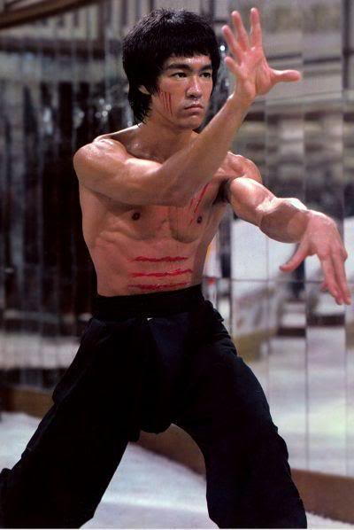
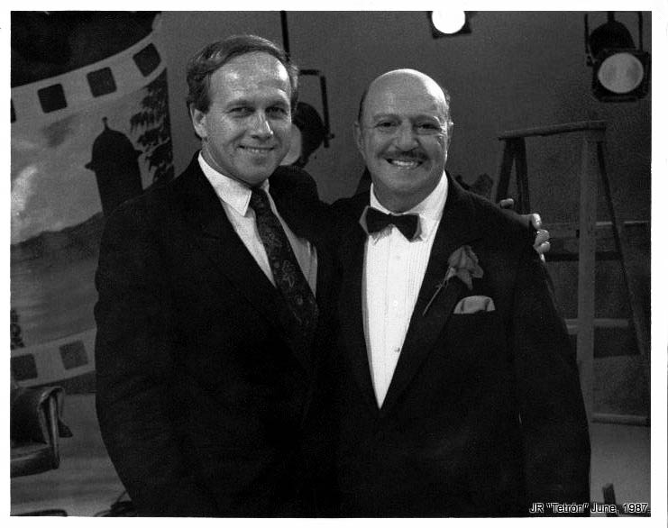
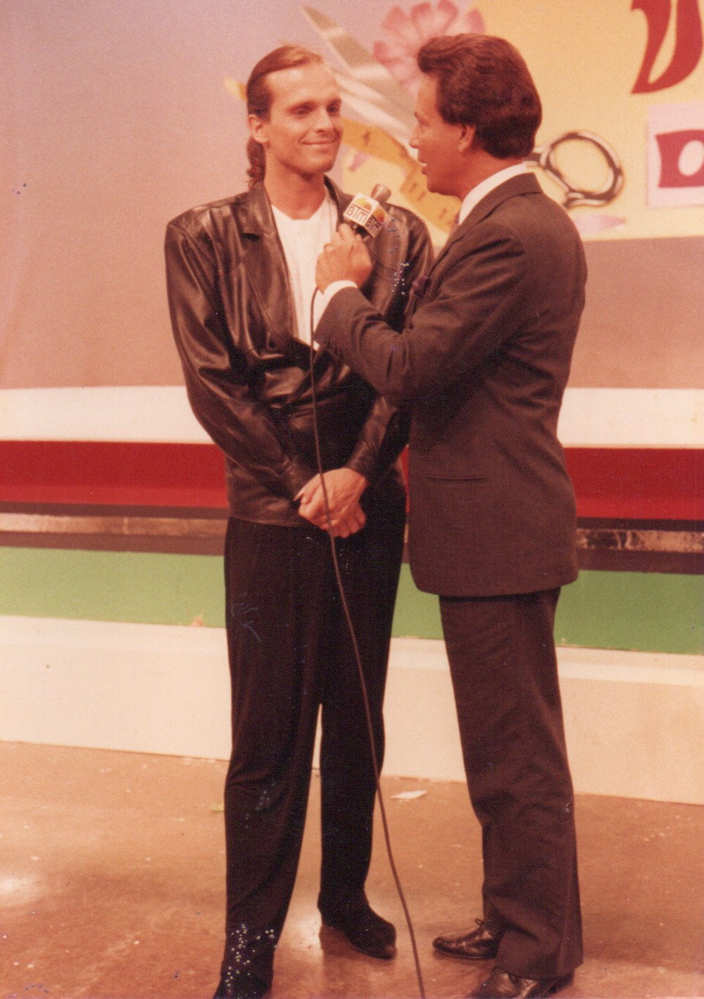

Preserving the Essence of Humanity Across the Stars
"Preserving the genetic and cultural legacy of Earth for Martian generations. This archive preserves the stories of those who planted trees for humanity on Earth, so that we may remember their shade as we plant new forests on Mars."